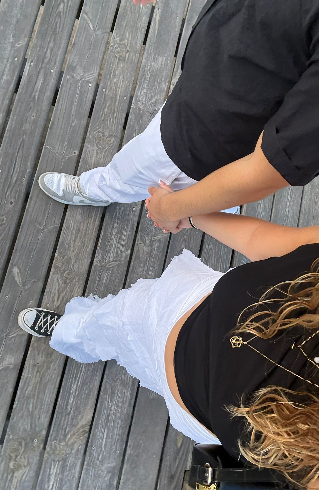
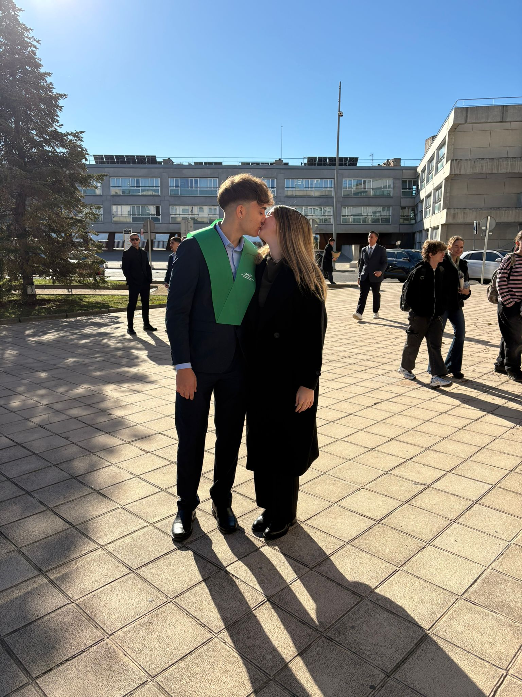
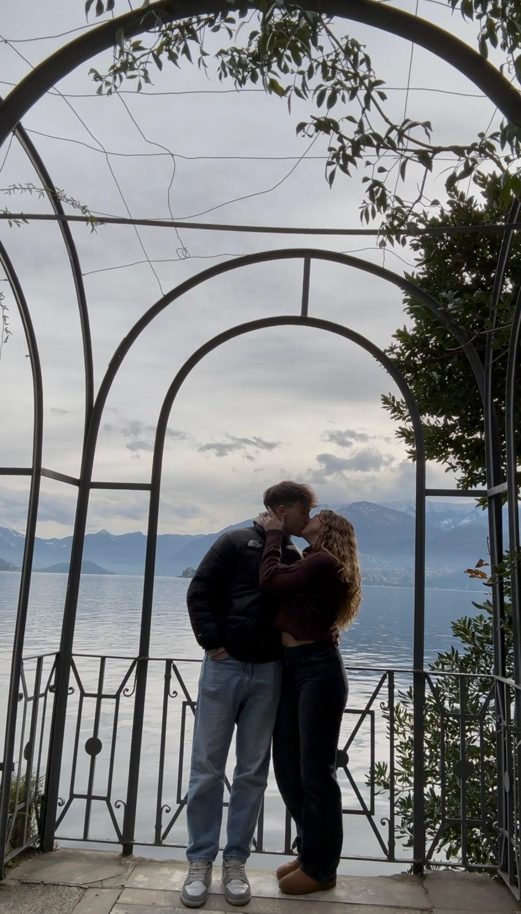
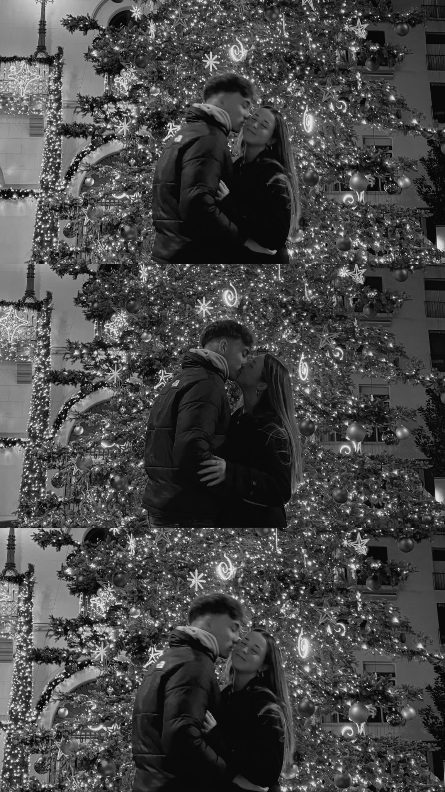
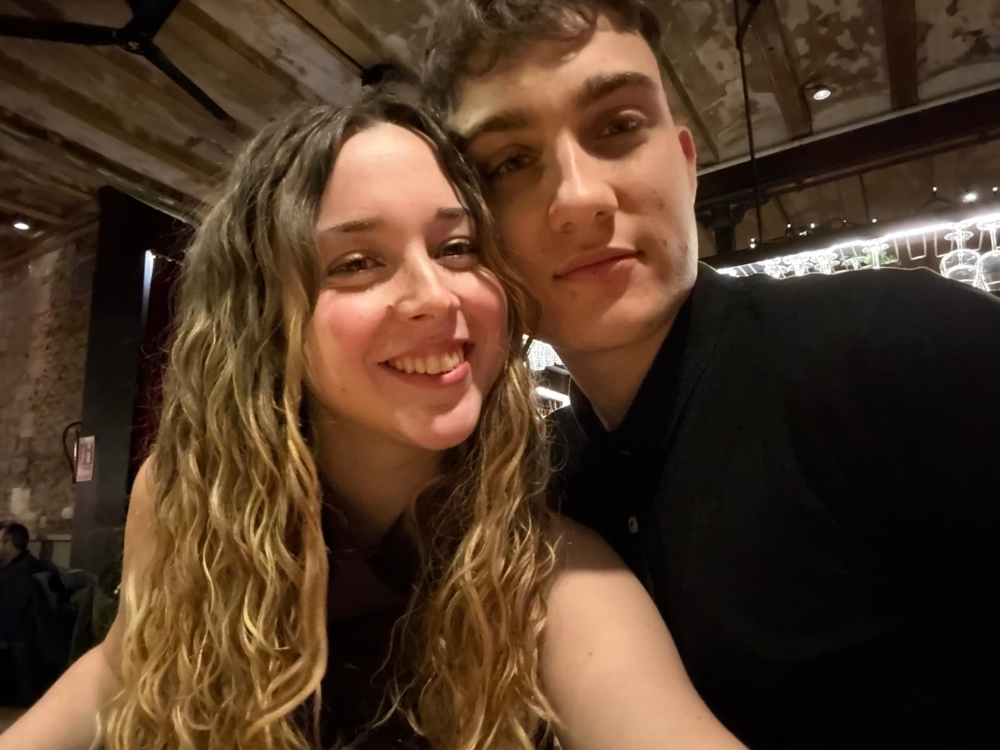
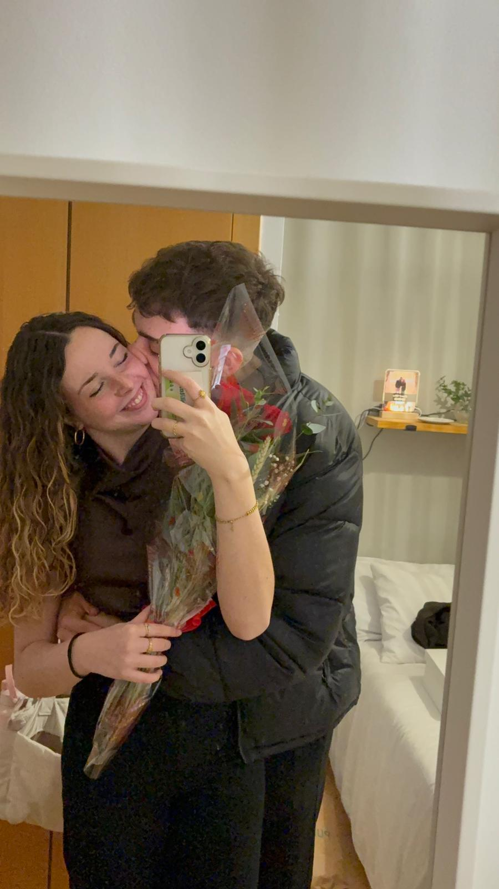
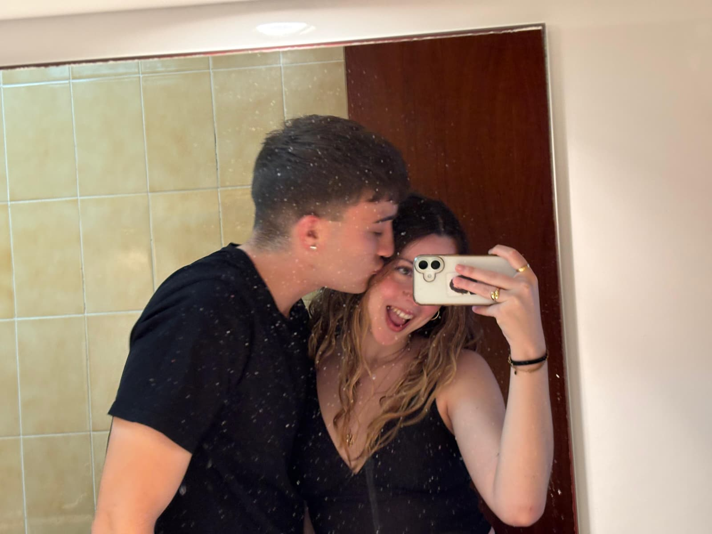
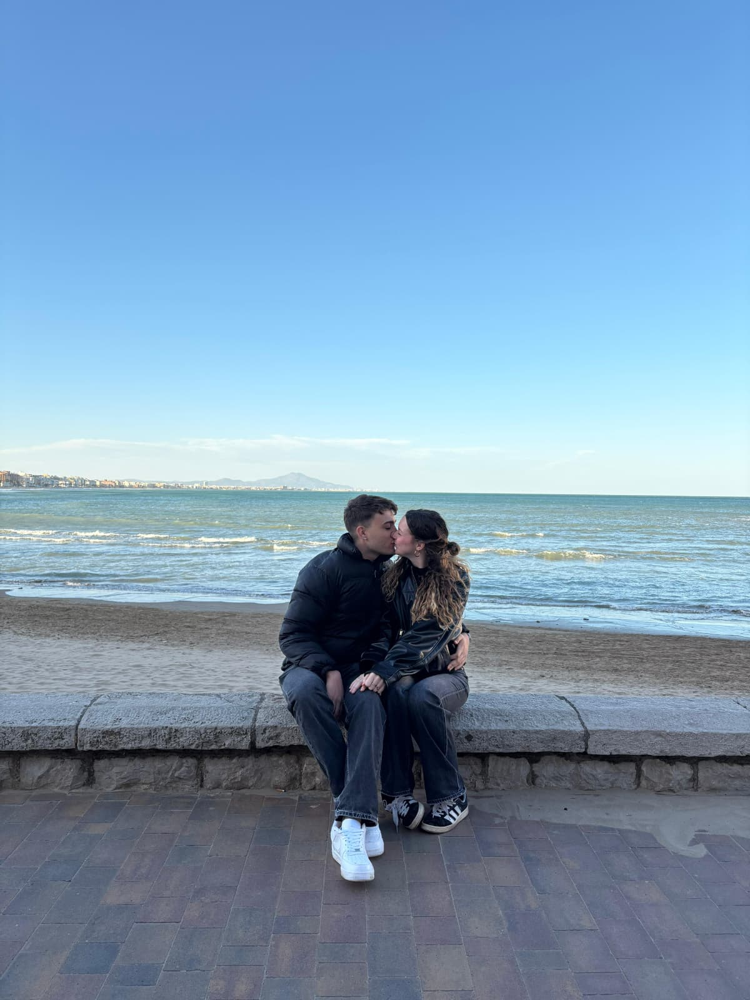

Mes 0 — Setembre 2025
El mes on tot va començar.
Gràcies per fer que cada dia sigui més bonic que l’anterior.
El mes on tot va començar.

Tu novio se graduó (y tu muy guapa)

El primer viatge junts

El primer Nadal

El nostre primer San Valentín


Peñiscola


Gràcies per aquests vuit mesos. Pel que hem viscut i per tot el que vindrà. T’estimo.
Hola novia (jo sempre tan cariñoso),
No sé ben bé com començar a escriure això i no pensava que mai ho acabaria fent, almenys no tan aviat.
Des d’un principi et vaig dir que jo no m’anava a ficar en una relació si no ho tenia clar. No et sorprendrà que et digui que dubtava, que no m’atrevia a donar el pas, tot i que fent un anàlisi profund te’n adones que no ho feia per por. I menys mal que la vaig deixar de costat.
Em sento molt afortunat d’haver trobat una persona com tu. Sempre t’he dit que una persona t’entra pels ulls pel físic, però t’enamora per com és. Des de que ens vam conèixer aquell dia que et vaig portar al panoràmic (i et vaig fer arribar tard a un cumple) he sentit que teníem una connexió que poc a poc veia més intensa, i que amb el temps m’he adonat que no havia tingut mai.
Ets la única persona amb la que jo noto que cada dia m’agrada més que l’anterior. Tot i que no sigui la persona més activa al WhatsApp, no em cansaria mai de parlar amb tu. Ets una persona que enganxa, i això ho veu tothom que t’envolta. Ets una persona empàtica, madura, responsable, amb unes idees clares, que sap el que vol.
Ets la primera persona de la que em sento orgullós. No saps l’orgull que sento sabent que ets la meva parella, sabent que la vida no t’ho posa fàcil i tot i així intentes fer les coses fins al final, fins que ja estàs a punt de rebentar.
T’ho vaig dir un dia, i semblarà una tonteria, però no saps la il·lusió que em fa qualsevol petit logro que aconsegueixes: estic orgullós quan aproves assignatures de la uni a la que li estàs, estic orgullós de que tinguis la força d’aixecar-te a les 5 del matí, anar-te fins a Mollet a treballar, acabar rebentada i tot perquè vols ser una persona independent, capaç. Allò que vols ho acabes o ho acabaràs aconseguint.
Gràcies per ser com ets amb mi. Gràcies per tenir-me la paciència que em tens, quan jo no la sé tenir molts cops. Gràcies per sempre complir amb la teva paraula i voler parlar les coses, fins i tot quan jo no vull o no sé parlar-les. M’has demostrat que el tipus de relació que volia i buscava era possible.
Ets una persona amb la que construiria un futur. Em veig anant-me a viure amb tu, formant una família, fent-nos grans junts. Potser me estoy adelantando a los acontecimientos, però al final per a què es fica un en una relació si no busca un futur junts (no et faré tenir fills als 23).
També t’he de donar les gràcies per tot el que fas per mi. Des del primer dia m’has obert les portes de casa teva, de la teva família, dels teus amics, de la teva vida. No t’he demanat mai que em demostris res perquè ho fas tu sola.
Considerar-me una persona detallista estant al teu costat és difícil. Vas fer que tingués il·lusió per celebrar el dia del meu aniversari, que ja portava uns anys sent pràcticament un dia més. Vas fer que tornés a tenir il·lusió pel Nadal. Fas que tingui ganes de portar-te el que sigui perquè sé que encara que sigui una merda et farà il·lusió (o la finges).
Ets la primera persona amb la que realment he sentit coses. Mai havia plorat davant de ningú, i no crec que sigui per sentir-me feble, crec que és perquè et tinc tant apreci que em senta fatal saber que et puc estar fent sentir malament.
Aquest últim mes no ha sigut el millor des de que vam començar. T’he demanat perdó mil cops i t’ho hauré de demanar altres mil perquè res se’m dona millor que cagar-la. Tot i així, sempre t’ho he dit, i ho reiteraré: sempre estaré disposat a millorar, a treballar el que faig malament, el que a tu et pugui fer mal.
Vull que aquesta relació no tingui final. Quin millor encert que acabar amb la primera persona amb la que vas voler sortir? Sempre et dic que vull ser la millor parella que has tingut, i tot i que no m’ho han deixat massa difícil, cada dia intento millorar perquè sé que així et podré fer una mica més feliç.
Abans d’acabar la carta, demanar disculpes perquè la comprensió lectora deu ser difícil d’aplicar aquí. Ho he anat escrivint tot segons ho pensava, és el que sento, és el que penso i sempre m’agrada dir-te les coses tal qual les penso.
Sento tots els baches que hem anat passant, especialment els que han sigut culpa meva. Fins i tot en aquests moments, m’has demostrat que ets una persona amb la que es pot parlar, que vol que millorem, que solucionem les coses. Segueix-me explicant tot el que et passi, tot el que sentis, no et callis mai res. És altre de les coses que t’agraeixo, la transparència que tens amb mi.
Mai em cansarà escoltar que et ralla algo. És el que fa que aconseguim estar sempre tan bé (o almenys així ho sento jo).
T’estimo, ets l’amor de la meva vida i el millor que m’ha passat. (si ho vaig pensar en un somni por algo serà).
Tu novio, Marc.